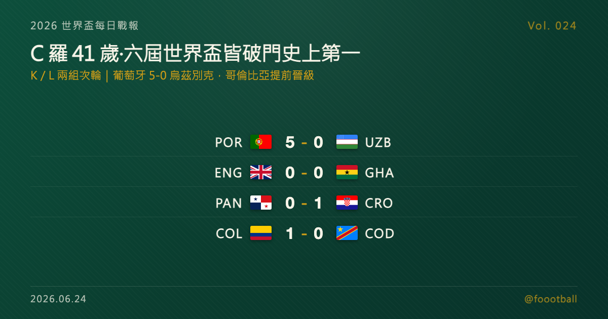

C 羅 41 歲寫紀錄：六屆世界盃皆破門史上第一人，葡萄牙 5-0 大勝烏茲別克
2026 世界盃 K、L 兩組次輪四場全部結束。在休士頓，41 歲的 C 羅對烏茲別克梅開二度，成為史上首位在六屆世界盃都有進球的球員，葡萄牙 5-0 大勝；哥倫比亞 1-0 撐過剛果民主、提前晉級，K 組出線大勢漸明，頭名與第二排序則留待末輪哥倫比亞對葡萄牙決定。L 組則陷入混戰：英格蘭控球近八成卻被迦納 0-0 逼平，克羅埃西亞 1-0 小勝巴拿馬，英、迦、克三隊末輪仍將為出線廝殺。

2026 世界盃每日戰報 Vol. 024｜小組賽｜K／L 兩組次輪賽果
§1 即時比分戰報
2026 世界盃小組賽次輪輪到 K、L 兩組，四場全部結束。最受矚目的一戰在休士頓 NRG 球場——41 歲的克里斯蒂亞諾·羅納度（Cristiano Ronaldo，C 羅）對烏茲別克梅開二度，成為足球史上第一位在六屆世界盃都有進球的球員，率領葡萄牙 5-0 大勝。同一組的哥倫比亞 1-0 力克剛果民主、提前晉級。L 組則是另一番光景：英格蘭整場壓著迦納打、控球率逼近八成，卻始終攻不破對手大門，0-0 被逼平；克羅埃西亞則靠替補布迪米爾的進球 1-0 擊敗已出局的巴拿馬。以下是本輪四場賽果：
| 賽事 | 比分 | 場館 | 焦點 |
|---|---|---|---|
| 🇵🇹 葡萄牙 — 🇺🇿 烏茲別克 | 5 - 0 | 休士頓 NRG Stadium | C 羅 6'＋39'（梅開二度，史上首位六屆世界盃皆進球）、努諾·門德斯 17'、烏茲別克烏龍 60'、拉斐爾·萊昂 87' |
| 🏴 英格蘭 — 🇬🇭 迦納 | 0 - 0 | 波士頓 Gillette Stadium | 三獅控球近八成、射門 19-1 仍破不了門；凱恩 86' 錯失良機 |
| 🇵🇦 巴拿馬 — 🇭🇷 克羅埃西亞 | 0 - 1 | 多倫多 BMO Field | 替補布迪米爾 54' 近距離破門（34 歲成克隊世界盃史上最年長進球者） |
| 🇨🇴 哥倫比亞 — 🇨🇩 剛果民主 | 1 - 0 | 瓜達拉哈拉 Estadio Akron | 穆尼奧斯 76' 破門，哥倫比亞提前晉級 32 強 |
四場分屬 K、L 兩組次輪。K 組哥倫比亞兩戰全勝、率先鎖定晉級，葡萄牙也靠這場大勝把出線主動權牢牢握在手中；L 組則打成一團混戰——英格蘭、迦納同積 4 分，克羅埃西亞 3 分緊追，三隊末輪仍要為出線名額廝殺。§2 是兩組目前的形勢，§4 與同步發佈的特刊則聚焦今晚最大的主角——41 歲、踢著自己最後一屆世界盃、卻仍在改寫紀錄的 C 羅。
§2 排行榜區：K／L 兩組次輪過後形勢
K 組（次輪打完）——哥倫比亞兩戰全勝、以 6 分領跑，已提前晉級淘汰賽；葡萄牙首輪 1-1 戰平剛果民主、本輪 5-0 血洗烏茲別克，以 4 分、淨勝球 +5 緊隨其後，晉級在望；烏茲別克兩戰全敗、已確定出局：
| # | 球隊 | 賽 | 勝 | 和 | 負 | 進 | 失 | 差 | 分 |
|---|---|---|---|---|---|---|---|---|---|
| 1 | 🇨🇴 哥倫比亞 | 2 | 2 | 0 | 0 | 4 | 1 | +3 | 6 |
| 2 | 🇵🇹 葡萄牙 | 2 | 1 | 1 | 0 | 6 | 1 | +5 | 4 |
| 3 | 🇨🇩 剛果民主 | 2 | 0 | 1 | 1 | 1 | 2 | -1 | 1 |
| 4 | 🇺🇿 烏茲別克 | 2 | 0 | 0 | 2 | 1 | 8 | -7 | 0 |
L 組（次輪打完）——英格蘭與迦納雙雙一勝一和、同積 4 分，靠淨勝球暫分先後（英格蘭 +2、迦納 +1）；克羅埃西亞贏下巴拿馬後升到 3 分、仍有機會；巴拿馬兩戰皆墨、已確定出局：
| # | 球隊 | 賽 | 勝 | 和 | 負 | 進 | 失 | 差 | 分 |
|---|---|---|---|---|---|---|---|---|---|
| 1 | 🏴 英格蘭 | 2 | 1 | 1 | 0 | 4 | 2 | +2 | 4 |
| 2 | 🇬🇭 迦納 | 2 | 1 | 1 | 0 | 1 | 0 | +1 | 4 |
| 3 | 🇭🇷 克羅埃西亞 | 2 | 1 | 0 | 1 | 3 | 4 | -1 | 3 |
| 4 | 🇵🇦 巴拿馬 | 2 | 0 | 0 | 2 | 0 | 2 | -2 | 0 |
本屆晉級規則：12 個小組、每組前兩名加上 8 個最佳第三名，共 32 隊晉級淘汰賽。K 組大勢漸明——哥倫比亞確定晉級，葡萄牙手握 4 分與 +5 淨勝球、已站在極為有利的晉級位置，但尚未在數學上完全鎖定；烏茲別克則已確定打包回家。L 組懸念最濃：英格蘭、迦納並列、克羅埃西亞緊追；末輪（美加墨 6/27）英格蘭對上已出局的巴拿馬，克羅埃西亞則與迦納正面交鋒，兩場結果將決定誰能搶下出線門票。K 組末輪則是哥倫比亞對葡萄牙、剛果民主對烏茲別克。
§3 賽事摘要
- 葡萄牙 5-0 烏茲別克：本日、也是本屆至今最具話題性的一戰。41 歲的 C 羅第 6 分鐘接坎塞洛傳中近距離破門先馳得點，第 39 分鐘再下一城梅開二度——這兩球讓他成為足球史上第一位在六屆不同世界盃（2006、2010、2014、2018、2022、2026）都有進球的球員。努諾·門德斯（Nuno Mendes）第 17 分鐘以定位球攻入第二球，烏茲別克第 60 分鐘自擺烏龍、替補登場的拉斐爾·萊昂（Rafael Leão）第 87 分鐘錦上添花。葡萄牙在首戰 1-1 戰平剛果民主後，以這場 5-0 拿下本屆首勝。C 羅的世界盃軌跡與這項紀錄的份量，詳見 §4 與同步發佈的特刊。
- 英格蘭 0-0 迦納：一場「控球壓制卻顆粒無收」的悶戰。三獅軍團整場控球率逼近八成、射門數以 19-1 碾壓對手，卻始終無法攻破迦納的大門；隊長凱恩（Harry Kane）第 86 分鐘在門前抓到機會卻未能把握，全場最好的破門良機就此溜走。據外電統計，這是近六十年來世界盃「單場控球率最高卻交白卷」的球隊之一。英格蘭、迦納各拿 1 分，雙雙以 4 分並列小組前二。
- 巴拿馬 0-1 克羅埃西亞：替補建功的一戰。半場替補登場的布迪米爾（Ante Budimir）第 54 分鐘接斯坦尼希奇（Josip Stanišić）的傳中近距離破門，攻入全場唯一進球——34 歲的他也藉此成為克羅埃西亞世界盃史上最年長的進球者。這 3 分讓克羅埃西亞重燃出線希望，巴拿馬則兩戰兩負、提前出局。
- 哥倫比亞 1-0 剛果民主：穆尼奧斯（Daniel Muñoz）第 76 分鐘在禁區內的一擊定江山，哥倫比亞 1-0 拿下關鍵勝利、兩戰全勝提前晉級 32 強，成為 K 組第一支鎖定淘汰賽門票的球隊。
§4 焦點觀察｜41 歲的 C 羅，把紀錄踢進了第六屆世界盃
世界盃的紀錄簿上，今晚多了一行只屬於一個人的文字：第一位在六屆世界盃都有進球的球員。
在休士頓，41 歲的 C 羅對烏茲別克梅開二度（6'、39'）。這兩球讓他的世界盃進球橫跨 2006 到 2026、六屆賽事，成為足球史上獨一無二的長壽紀錄——從 2006 年那個 21 歲的新星，到此刻踢著最後一屆世界盃的隊長，靠的是一整個職業生涯近乎偏執的自律。
要替這項紀錄擺對位置，得先說清楚它「不是什麼」：C 羅的世界盃生涯進球靠這場梅開二度來到 10 球、是葡萄牙隊史第一，但仍不是世界盃史上最高——男足頭號射手是昨晚才以 18 球登頂的梅西，前面還排著姆巴佩、克洛澤與巴西名宿羅納度（Ronaldo）等人。C 羅改寫的不是「進最多球」，而是「在最多屆都進球」，一項關於穩定與長壽的紀錄，恰恰是這位 41 歲老將最動人的標籤。憑這場大勝，葡萄牙也站上了極為有利的晉級位置。
放眼 K、L 兩組，本輪劇本一邊清晰、一邊膠著：K 組哥倫比亞提前晉級、葡萄牙緊隨在後；L 組英格蘭、迦納、克羅埃西亞三隊纏鬥，把懸念全留給了末輪。而所有目光，恐怕仍會落在那位 41 歲的 7 號身上。
📖 完整特刊《六屆世界盃皆破門：C 羅 41 歲寫下史上第一，葡萄牙的最後一舞》已同步發佈，把這項紀錄的來龍去脈、C 羅橫跨二十年六屆世界盃的進球軌跡、它在歷史座標中的真正位置，以及葡萄牙這屆的晉級之路，完整講透： 👉 https://foootball.twtools.cc/articles/worldcup-special-2026-06-24-ronaldo/
§5 接下來看點
K、L 兩組次輪收官後，末輪的戲碼也已浮現。K 組的看點在頭名與第二之爭：哥倫比亞已晉級，末輪將與葡萄牙正面對決，這場「全勝之師對上晉級在望強權」的較量，將決定 K 組的最終排序——對位淘汰賽對手的關鍵，往往就藏在頭名歸屬裡；另一場剛果民主對烏茲別克，則是一勝難求的尊嚴之戰。L 組則是本輪最大的懸念所在：英格蘭、迦納同積 4 分、克羅埃西亞 3 分緊追，末輪英格蘭對巴拿馬、克羅埃西亞對迦納兩場同時開打，三隊都仍有機會搶下兩張淘汰賽門票，誰能笑到最後充滿變數。與此同時，本屆其餘小組的次輪與末輪賽事也將陸續登場。最新的賽果與形勢，Vol. 025 接著報。
常見問題
Q：C 羅這場創下了什麼紀錄？ A：他對烏茲別克梅開二度，成為足球史上第一位在六屆不同世界盃（2006、2010、2014、2018、2022、2026）都有進球的球員。這是「在最多屆都進球」的長壽紀錄，而非進球最多——男足世界盃史上頭號射手仍是以 18 球登頂的梅西。
Q：C 羅的世界盃生涯進了幾球？ A：累計 10 球，超越尤西比奧、成為葡萄牙隊史世界盃進球最多的球員；但在世界盃總進球榜上，他仍排在梅西（18）、姆巴佩與克洛澤（各 16）、巴西名宿羅納度（15）之後。
Q：K、L 兩組哪些球隊晉級或出局了？ A：K 組哥倫比亞兩戰全勝、提前晉級，葡萄牙積 4 分、晉級在望（尚未數學鎖定），烏茲別克已出局；L 組英格蘭、迦納並列領先、克羅埃西亞緊追，巴拿馬兩戰兩負已出局。
Tags: 世界盃, 2026世界盃, C羅, 葡萄牙, 哥倫比亞, 英格蘭